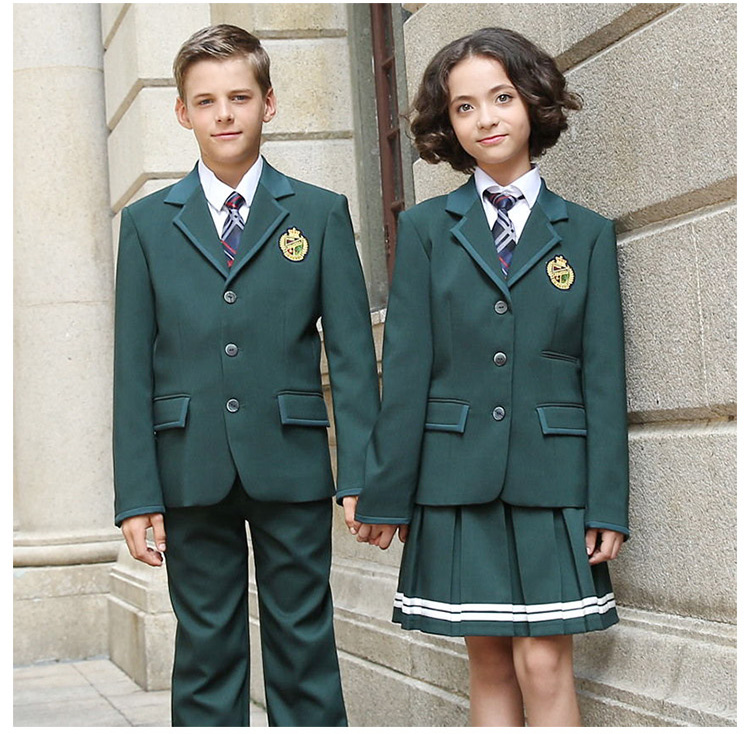

Outfit Your Child for Success with French Toast
When it comes to setting your child up for academic success, the right school attire plays a crucial role. French Toast has been America's leading school uniform brand for over three decades, providing families with high-quality, affordable clothing solutions that help children feel confident and prepared for learning.
The Psychology of School Uniforms

Research consistently shows that school uniforms create a sense of belonging and reduce social distractions in the classroom. When children wear quality uniforms from French Toast, they experience several psychological benefits:
- Enhanced Focus: Without the pressure of choosing daily outfits, students can concentrate on learning
- Increased Confidence: Well-fitted, comfortable clothing helps children feel prepared and professional
- School Pride: Uniforms foster a sense of community and school identity
French Toast's Commitment to Quality
French Toast understands that school clothes need to withstand the rigors of daily student life. Their garments are engineered with innovative fabric technologies that deliver exceptional durability and comfort:
Moisture-Wicking Technology: Advanced fabrics keep students cool and comfortable throughout active school days, reducing discomfort and distractions during learning.
Stain-Resistant Properties: Lunch spills and art class accidents are no match for French Toast's specialized fabric treatments that release stains easily in the wash.
Wrinkle-Free Convenience: Busy mornings become stress-free with clothing that maintains a professional appearance straight from the dryer.
Comprehensive School Wardrobe Solutions
Girls' Uniform Excellence
French Toast's girls' collection balances style with practicality. From classic pleated skirts to modern performance polo shirts, every piece is designed to help young ladies feel confident and ready to tackle their academic goals. The collection includes adaptive fits and extended sizing to ensure every student finds their perfect match.
Boys' Uniform Essentials
The boys' line features reinforced construction in high-wear areas, ensuring that active students can focus on learning rather than worrying about their clothes. French Toast pants feature double-knee reinforcement and secure pockets, while shirts maintain their professional appearance throughout the longest school days.
Building Morning Success Routines
One of the greatest benefits of choosing French Toast uniforms is the streamlined morning routine they create. Parents report that their children experience less stress and arrive at school feeling more prepared when outfit decisions are eliminated from the morning rush.
This consistency allows families to focus on more important aspects of school preparation, such as reviewing homework, eating a nutritious breakfast, and discussing the day's learning objectives.
Affordability Meets Excellence
French Toast recognizes that quality education expenses can strain family budgets. Their commitment to accessible pricing ensures that every child can benefit from professional-grade school attire without financial hardship. The brand offers:
- Multi-Child Discounts: Savings that increase with family size
- Seasonal Sales: Strategic timing helps families maximize their uniform budgets
- School Partnership Programs: Exclusive deals negotiated directly with educational institutions
- Extended Warranty Options: Protection against normal wear ensures long-term value
Supporting Academic Achievement
Teachers consistently report that students wearing quality uniforms demonstrate improved classroom behavior and academic engagement. When children feel comfortable and confident in their appearance, they're more likely to participate actively in learning activities and build positive relationships with peers and teachers.
French Toast goes beyond just providing clothes – they're contributing to an environment where learning can flourish and students can reach their full potential.
Conclusion: Investing in Your Child's Future
Choosing French Toast uniforms represents more than a clothing purchase – it's an investment in your child's educational success. With their proven track record of quality, innovation, and affordability, French Toast continues to help families create positive school experiences that last a lifetime.